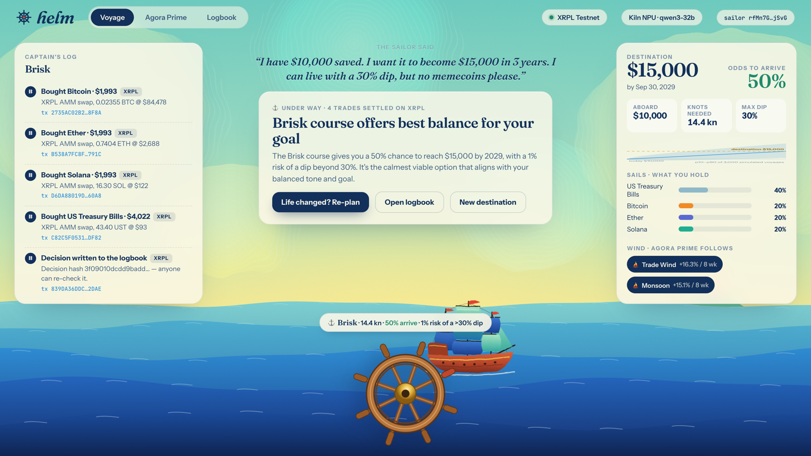
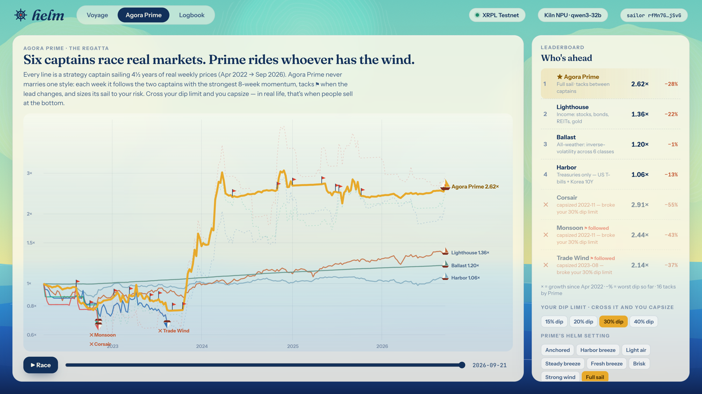
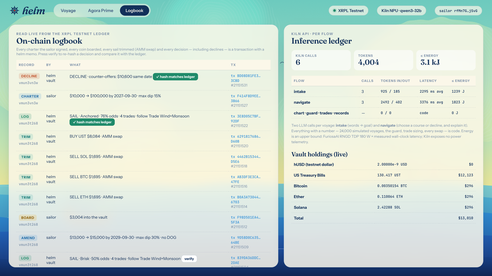
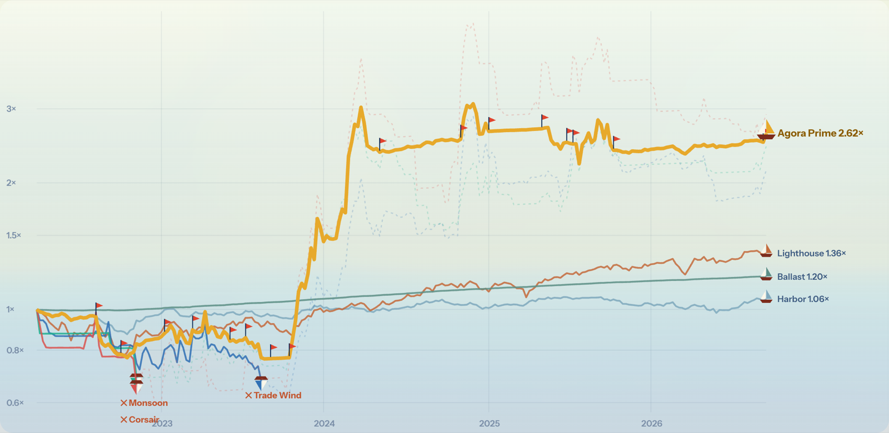

Set a destination. An AI navigator steers your money there — and tells you honestly when it can't.
Founder, THE ZONE. Designs and ships AI‑agent products solo — product, design, engine, chain and pitch. Earlier work explored agents competing as strategy "captains"; helm turns that idea into a consumer money product.
All helm code was written during the event window (Sep 28–30). Stack: Node.js, vanilla JS/SVG/canvas UI, xrpl.js, Kiln API (Bricksum NPU cloud). One runtime dependency.
asset classes tokenized on XRPL, from T‑bills and 국채 to memecoins
live Track A runs: sail, re‑plan, decline — every step on‑chain
Kiln calls per voyage; everything numeric is code
runtime dependency; no build step
People pick one style, ride it into a storm and sell at the bottom. Advisors never say "this goal is impossible". Nobody makes switching strategy simple, honest and accountable.
Best / worst of 9 asset classes per calendar year, weekly closes (Yahoo Finance), from helm's own market snapshot.
"$10,000 → $15,000 in 3 years, 30% dip at most, no memecoins." You sign it on‑chain as a charter.
8 courses × 3,000 simulated voyages on real prices. The navigator only sets sail when the odds are on your side.
It follows whichever strategy captains have the wind and tacks when the lead changes — every trade and decision lands on XRPL.
Money as a game you can actually win: a helm to turn, knots of speed, a destination on the horizon — and one rule: don't capsize.

Kiln calls, XRPL transactions, the odds, your sails. Turn the helm to preview any course.

Agora Prime regatta — six captains race real markets; set your dip limit and watch who capsizes.

Logbook — read live from the ledger; verify re‑hashes any decision.
No agent loop burning tokens. /no_think keeps Qwen3 reasoning at ~1 token. Energy logged per call.
Reads charters, vault balances and AMM prices from XRPL; writes charters, swaps, decisions and declines as memo'd transactions.
9 asset classes as XRPL tokens with AMM pools seeded at real prices — T‑bills and 국채 trade next to BTC.
| Run | The sailor said | helm did | On‑chain |
|---|---|---|---|
| R1 | “I have $10,000 saved. I want it to become $15,000 in 3 years. I can live with a 30% dip, but no memecoins please.” | SAIL · Brisk · 50% odds · +BTC +ETH +SOL +UST | 7 txs · 839DA36DDC… |
| R2 | “Good news — I got a bonus and I am adding $3,000. Same goal: $15,000, same date. I would rather sleep well now.” | SAIL · Anchored · 76% odds · −ETH −BTC −SOL +UST | 7 txs · 3E8D05C7BF… |
| R3 | “Turn $10,000 into $100,000 by next October. I cannot stomach losing more than 15%.” | DECLINE · 0% odds · offers $10,600 same date · no money moved | 2 txs · BD08D81FE3… |
3 calls · 1,110 tokens · 2.3 s avg · ≤1.2 kJ
3 calls · 2,894 tokens · 3.4 s avg · ≤1.8 kJ
24,000 simulated voyages, guard, sizing, every swap and record: 0 tokens.

| Apr 2022 → Sep 2026 | Growth | Worst dip |
|---|---|---|
| ★ Agora Prime · Full sail | 2.62× | −28% |
| Agora Prime · Fresh breeze | 1.71× | −19% |
| Corsair (SOL + memecoin) | 2.91× | −55% ✕ |
| Monsoon (crypto trend) | 2.44× | −43% ✕ |
| Trade Wind (cross‑asset momentum) | 2.14× | −37% ✕ |
| Lighthouse (stocks/bonds/REITs/gold) | 1.36× | −22% |
| Harbor (T‑bills + Korea 10Y) | 1.06× | −13% |
Weekly, after 0.2% swap costs. ✕ = capsized at a 30% dip limit. Parameters were chosen on this same window (in‑sample); out‑of‑sample validation is on the roadmap. Not investment advice.
Savers with a real goal — a deposit, tuition, early retirement — who hold bits of everything and don't know when to switch.
T‑bills, bonds and funds are being tokenized on public chains; low‑power NPU inference makes a per‑user navigator cheap enough to run for everyone.
AUM fee on voyages under sail; a captain marketplace where outside strategies race in the regatta and earn a share when Prime follows them.
Track A on XRPL Testnet: charter, odds, sail, re‑plan, decline — all on‑chain, 2 Kiln calls per voyage.
Weekly "watch" in code (0 tokens) that tacks automatically; the LLM only wakes when the plan or your life changes.
Real tokenized T‑bill funds, stock and REIT tokens; prediction‑market and yield captains; out‑of‑sample regatta seasons.
Open captain marketplace, family voyages, KRW rails and 국채 on‑chain.
Money grows fastest when you never capsize.